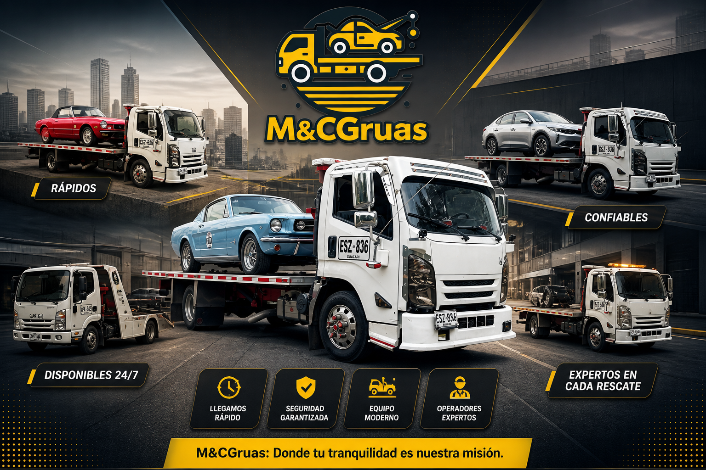

Servicio coordinado para traslados programados y necesidades de carretera entre estas ciudades.
Flota y empresa
Flota, respaldo operativo e información de la empresa
Conoce la capacidad operativa de M&C Grúas, la información de la empresa y el respaldo de servicio para recorridos entre Cali, Bogotá y Pasto.
Grúas y plataformas
Datos empresariales
Cali, Bogotá y Pasto

Cobertura y respaldo
Ruta Cali - Bogotá
Ruta Bogotá - Cali
Ruta Cali - Pasto y Pasto - Cali
Servicio con atención clara y rutas definidas
Esta información permite conocer mejor el respaldo operativo de la empresa y las rutas donde actualmente se concentra el servicio.
Atención para retornos, movilizaciones empresariales y recorridos de regreso hacia Cali.
Apoyo en el corredor sur con coordinación segura para particulares, empresas y carga liviana.
Vehículos de servicio
Grúas y unidades visibles para dar respaldo al servicio
Estas unidades respaldan los servicios urbanos, los traslados programados y los recorridos principales entre Cali, Bogotá y Pasto.